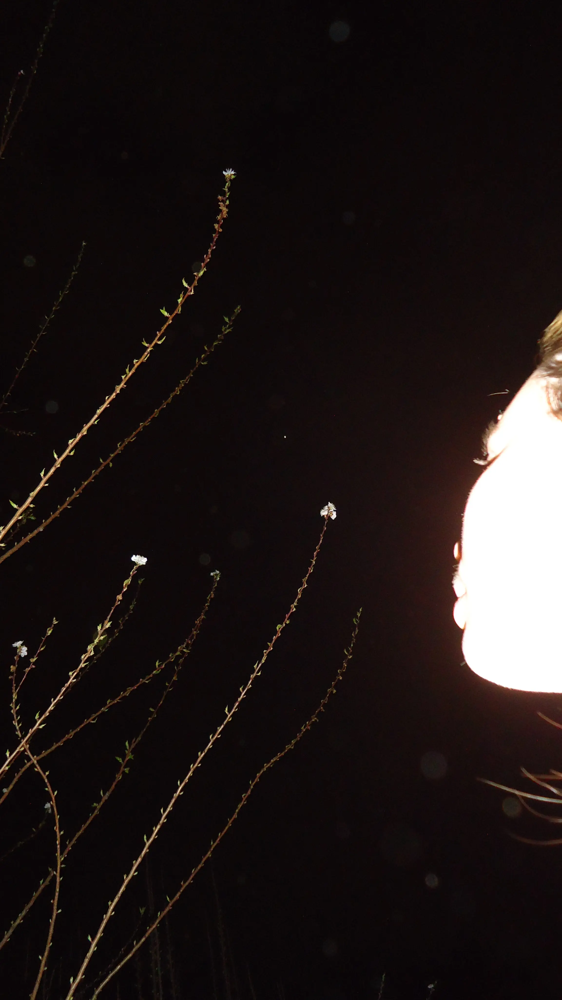
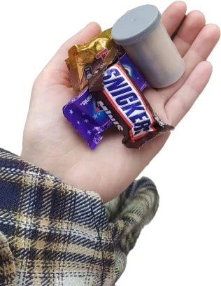
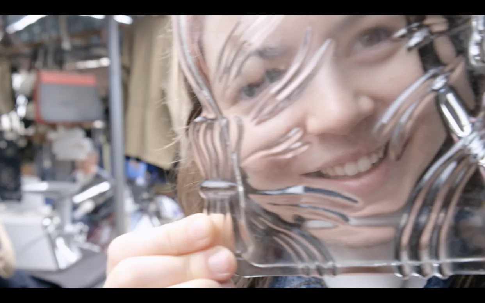
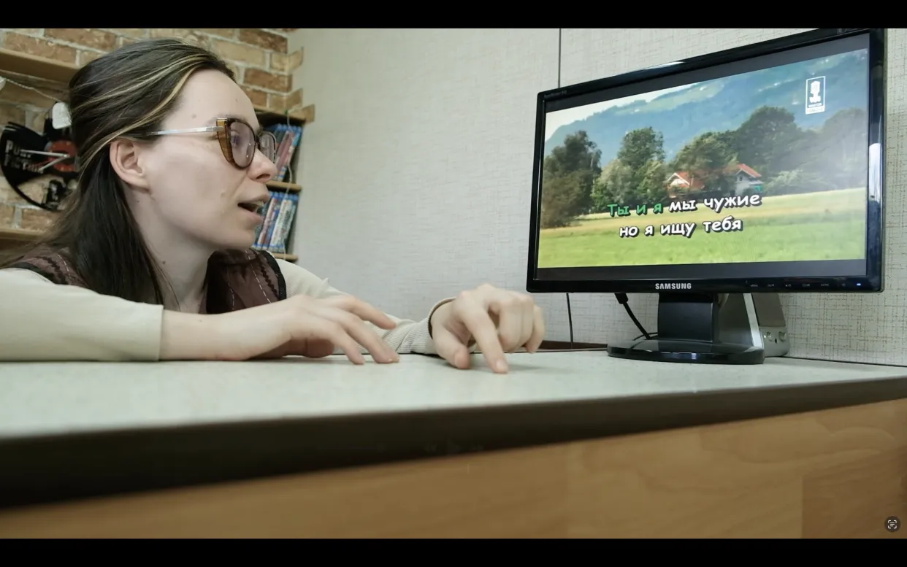
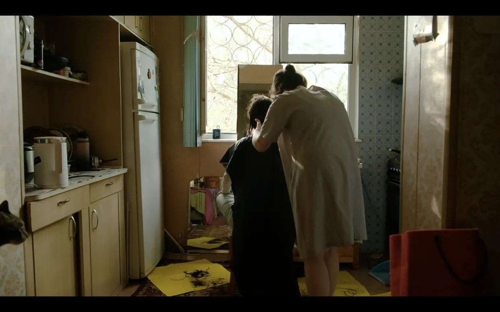
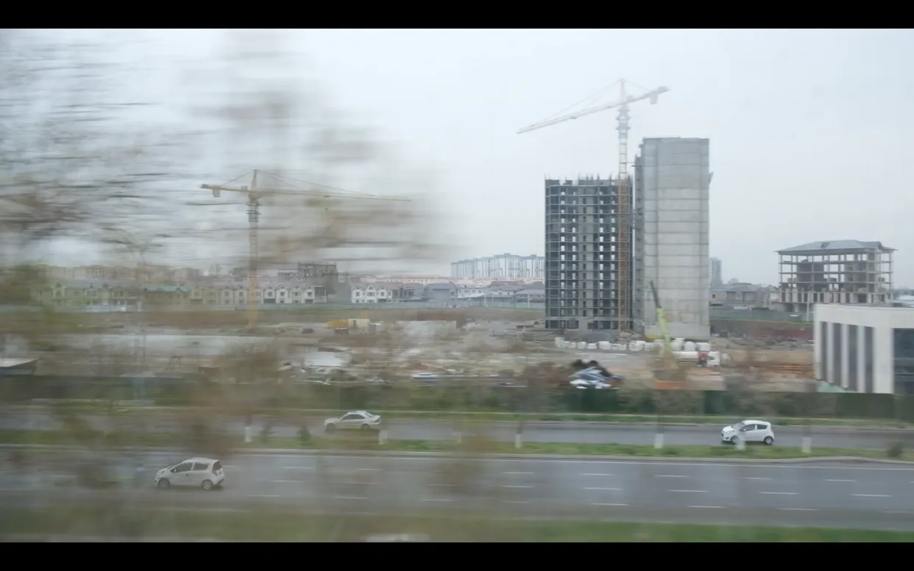
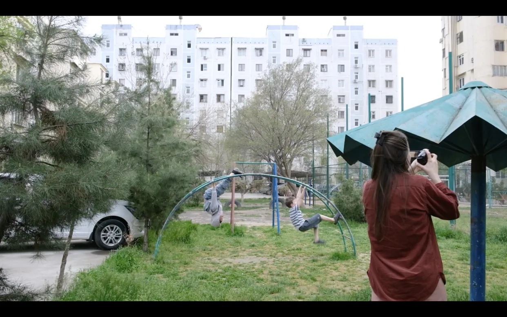

MenuEverything’s new, and some things aren’t
Film
2026
Ksyusha is my friend—she’s also a magician and a free spirit. She inspires me, and I love watching her and experiencing all kinds of things together with her—she shows me how to have fun and be open to others, how to dream, and how to create spaces for collective creativity. This film captures a few days of our friendship, spent together and recorded by me; it’s a few days of wandering through Tashkent in the spring; and a couple of things we’d been putting off.
The film was created as part of a cinematography course led by Umida Akhmedova and Rusudan Mirobzalova.


One day, when I was still working at 139 DC, Ksyusha came there for the first time with her thermal camera and showed me this trick—and at first I couldn’t even believe how naive she was. Back then, I thought to myself, “What a strange girl.” We didn’t become friends right away, but I don’t even remember when we did—we just started wandering all over town, showing each other all kinds of wonders. Over time, I realized that Ksyusha also had the same superpower as I did—the ability to create adventures and find magic in the most ordinary things. Finally, I had a friend who was a magician; she’d pull a handful of stars out of her pocket for me and understand the value of what I’d collected.
I always look forward to her new photos on the Locket app, and sometimes I’m amazed at how much love I get from her.



Ссылка на фильм, доступ с паролем